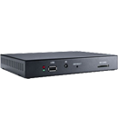

Toggle navigation
GeoVision Inc.
About
Company Profile
Award
Investor Relations
Products
IP Cameras
Eyeball
Dome
Bullet
Fisheye
Multi-sensor / Panoramic
Thermal
Box
PTZ
IP Speed Dome
3D People Counter
Accessories
Pinhole
Access Control
Software
IP Control Panel / Kit
Controller
Reader
Accessories
License Plate Recognition
Software
IP LPR Camera (built in Deep Learning Recognition Engine)
IP LPR Camera
Video Management Software
VMS
NVR
Recording Server
Edge Recording Manager
Large Scale Monitoring
Integration
Backup Management
Video Analytics
Mobile App
Surveillance System
Tower Systems
Hot Swap Systems
Control Center Systems
AI Systems
Mini Systems
Storage Systems
Mobile Systems
Accessories
SNVR and Decoder
Linux-based Standalone
Decoder Box
HD Video Encoder
PoE Solution
PoE Switch
Gigabit PoE Switch
PoE Extender
PoE Adapter
Accessories
IP Speaker and IO Box
IP Speaker
IO
USA Vision HD Analog
IP Cameras
HD Analog
Standalone NVR
HD DVR
Large Scale Monitoring
GV-Control Center
GV-Center V2 Pro
GV-Center V2
GV-Dispatch Server
GV-Vital Sign Monitor
GV-Video Gateway
GV-Video Wall
GV-Mobile Server
AI Solution
GV-AI FR
GV-LPR
GV-AI Server
GV-AI Guard
Cloud Solution
GV-AS Bridge
GV-AS1620
GV-Cloud Bridge
GV-DFK1355
GV-GEBF4911
GV-Cloud Access Control
GV-Cloud VMS
GV-VPN
GV-Cloud
Signage and IO Box

Signage Player
IO
Support
Download
Contact Us
Facebook
Twitter
Language
Global - English
North America
UK - English
(台灣) 繁體中文
(中国) 简体中文
日本語
Tiếng Việt
Français
Global - English
North America
UK - English
(台灣) 繁體中文
(中国) 简体中文
日本語
Tiếng Việt
Français
Facebook
Youtube
Twitter
Linkedin
Slideshare
Home
search
search